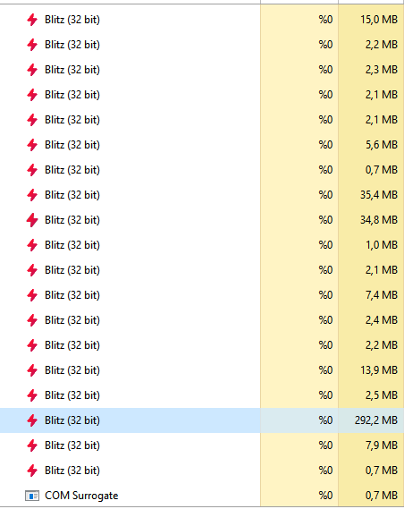
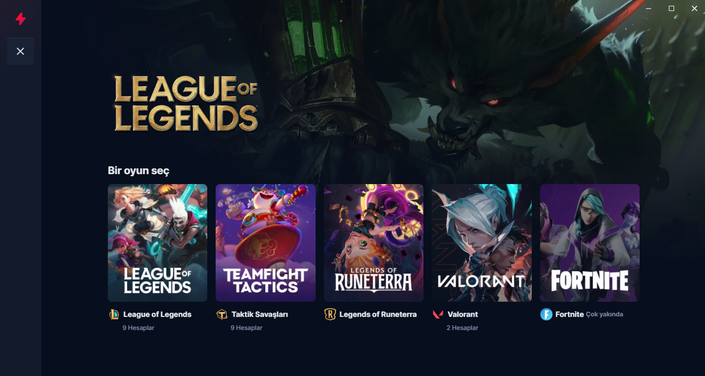
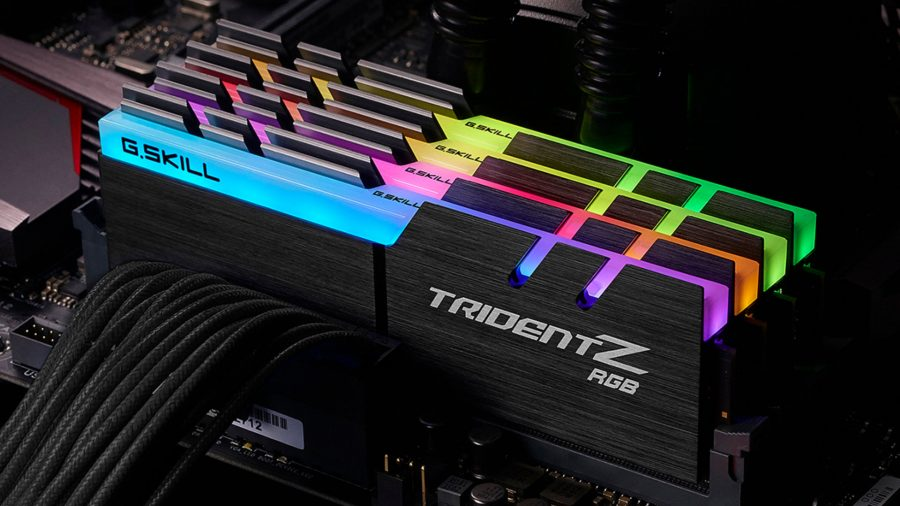
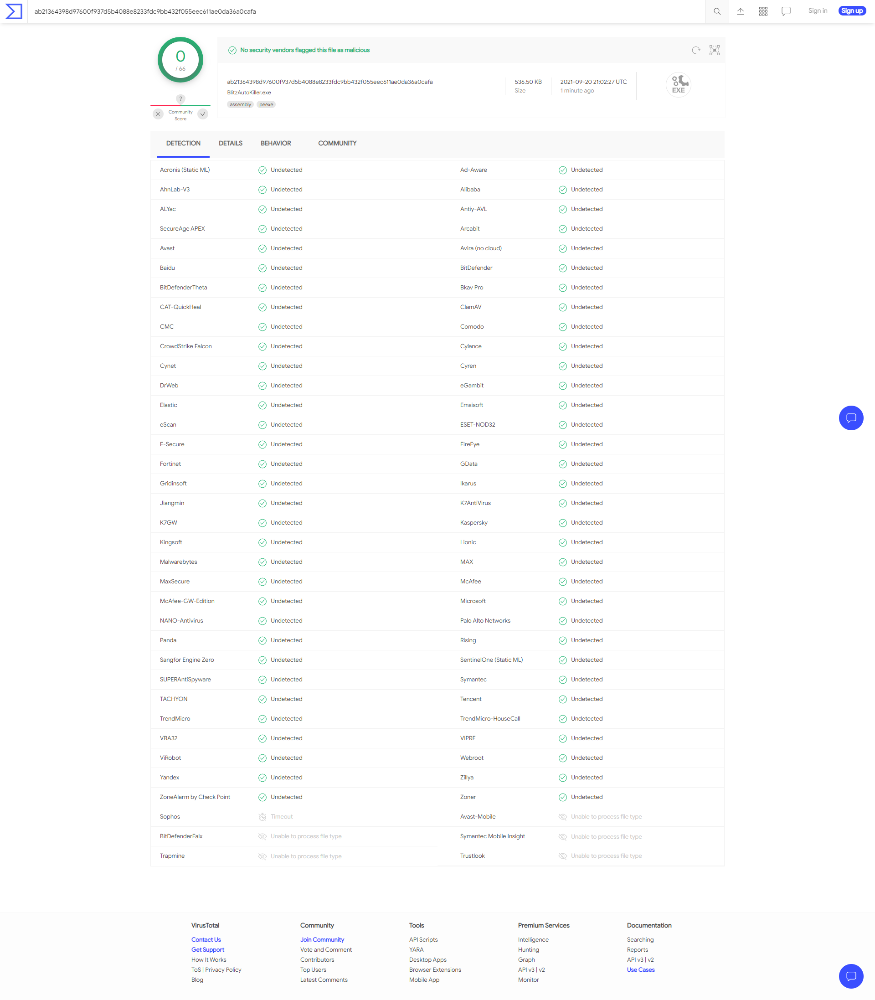

BlitzAutoKiller
DownloadSave memory
while using Blitz
Check advantages
Is your game lagging because of hundreds of megabytes RAM consumed by
Blitz?


Is "manually turning off Blitz and re-opening after every single game"
troublesome for you?
Save up to 450 MB memory

- Save up to 450 MB Memory!
- Still can use auto imported item builds
- Live draft recommendations
- Still can import runes and spells
- Can not use ingame interfaces (e.g. cs tracker)
How to use?
Just run the executable inside zip folder. You will see green Blitz system tray icon. It doesn't need administrator previliges and can run sandboxed.
How it works?
It detects when a game started and automatically closes Blitz while you are in game. When the game ends it restarts the Blitz app.
